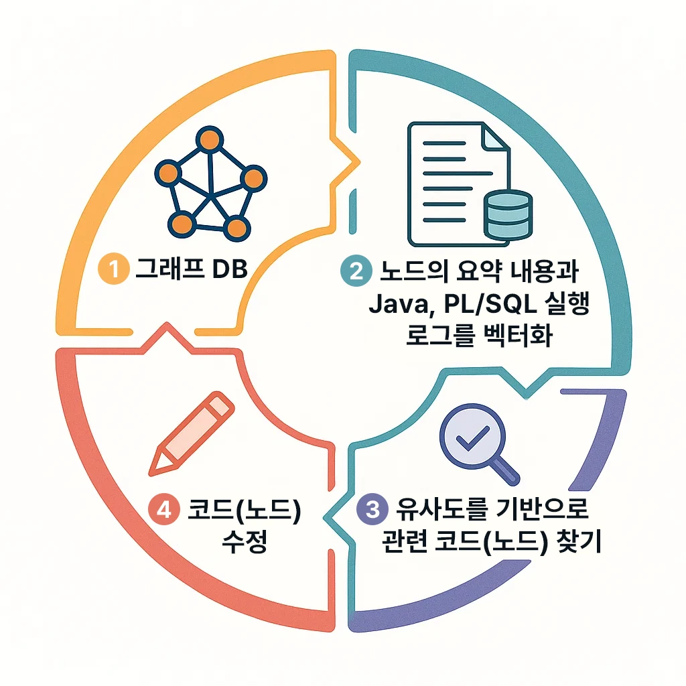

Building an Automated Coding Feedback Loop with a Graph DB and Embeddings
When migrating complex PL/SQL code to Java or refactoring a large legacy codebase, we often run into unexpected bugs.
Finding and fixing every problem by hand is tedious. But what if the code could analyze its own logs, find the cause, and fix it?
In this article, we show how to build an automated feedback loop agent that uses a graph DB and embedding vectors to let code detect errors and iterate on fixes by itself. We will keep it in terms developers are familiar with.

Representing Code Structure as a Graph
First, we break the PL/SQL code into individual statements and represent each as a graph node. For example, suppose we have the following PL/SQL snippet.
BEGIN
SELECT salary INTO v_salary FROM employees WHERE id = v_id;
IF v_salary < 0 THEN
RAISE invalid_salary;
END IF;
END;
In this code, the SELECT statement, the IF condition, and the RAISE exception handling each become a node. With a graph DB, the relationships between these code fragments can be stored explicitly. We defined two kinds of relationships.
- PARENT_OF: Represents containment. (e.g. the
BEGINblock node PARENT_OF theSELECT/IFstatement nodes inside it) - NEXT: Represents execution order. (e.g.
SELECTnode NEXTIFnode,IFnode NEXTEND IF, and so on)
Each node carries a one-line summary describing what the statement does. For example, the summary of the SELECT ... statement node might be "Look up the salary from the employee table and store it in the v_salary variable". Thanks to this graph structure, the flow and hierarchy of the code can be grasped at a glance, and even complex relationships between nodes can be expressed
A graph DB lets us store rich relationships between complex pieces of information, and use them as the basis for more context-aware search and analysis.
Converting Node Summaries into Embedding Vectors
Once the nodes exist in the graph, we convert each node's summary into a vector embedding. An embedding is a high-dimensional vector representation that quantifies the meaning of text. Simply put, if two embedding vectors are similar, the meaning of the two sentences can be considered similar as well. Such embedding vectors are easy to obtain with services like OpenAI's Embedding API. For example, embedding the summary "Look up the salary from the employee table and store it in a variable" makes the model return the meaning of that sentence as a vector with hundreds of dimensions.
We added a node.embedding field to each node object to store this vector. This enables semantic search: nodes can be found by their meaning rather than by the SQL text itself. (For instance, searching for the meaning "calculate salary" would return nodes related to salary calculation even if the actual SQL keywords differ.) In fact, combining vector-based similarity search with a graph has been reported to enable more accurate, context-aware information retrieval.
Why embedding vectors? Traditional keyword search can only find code that literally contains the word "salary", whereas embedding search can catch matches even when the wording differs, such as "wages" or "pay", as long as the meaning is similar. Because even complex sentences are compared by similarity in semantic space, it is well suited to comparing semantic similarity between code fragments.
Converting PL/SQL to Java (Spring) Code
Now we convert the PL/SQL code itself into Java (Spring Boot) code. PL/SQL is a procedural language that runs inside the database; picture a scenario where it is reimplemented in Java to move it onto a modern application architecture. For example, the earlier PL/SQL BEGIN ... END; block would become a Java method, the SELECT statement a JPA or JDBC call, and the IF and RAISE would map to Java conditionals and exception handling.
At this stage, the key is not a 1:1 code conversion but preserving the existing logic as faithfully as possible while moving it to Java. The converted Java code runs in a Spring Boot environment and must perform the same function as the original PL/SQL. (e.g. the logic that looks up and validates the salary must be identical.) But whether a person ports the code manually or an automatic conversion tool is used, subtle differences can introduce bugs. That is why the next step is to test and verify the converted code.
Running Tests and Collecting Logs
Once enough of the converted Java code is written, we run the prepared test scenarios to verify that it works correctly. For salary calculation code, for example, the tests would check the results across several employee records. If an error occurs or a result differs from what was expected, the symptom is left in the log. For example, a log line such as "Employee ID 123: salary mismatch error - expected 5000, calculated 0" might be printed.
We collected the log messages from failed test cases like these. What matters is understanding what these logs mean. Domain-friendly error messages (such as "salary mismatch") are far more useful for root-cause analysis than logs that contain only a technical stack trace like "NullPointerException at line 42". So wherever possible, it is a good idea to implement the application so that it leaves meaningful error messages.
To sum up so far: we ran tests against the code ported to Java and obtained logs that reveal problems. Now we need to use these logs as clues to find which code is at fault.
Understanding Logs Through Embeddings Too
Just as we embedded the summaries of the code nodes earlier, we now embed the log messages the same way. Sending the log text (e.g. "salary mismatch error - expected 5000, calculated 0") to the Embedding API yields another vector, log.embedding. This vector is a coordinate representing the meaning of that error log.
Now we can do something interesting: compare the similarity between the log embedding and the code node embeddings. Similarity between vectors is usually measured with cosine similarity. Cosine similarity ranges from -1 to 1, and the closer it is to 1, the more closely the two vectors point in the same direction, meaning their semantics are very similar.
Our system compares the collected log.embedding against every node.embedding in the graph in turn, and picks the top few pieces of code in order of similarity. For example, the embedding of a "salary mismatch" error log will most likely show high similarity with the embeddings of code nodes related to salary calculation or processing. In fact, Neo4j-based agent memory examples use a similar approach, storing user question embeddings in the graph DB and retrieving similar question-query pairs. We do much the same, finding related code from log embeddings.
This automatically narrows down where to look among a huge amount of code. Just as a search engine finds documents by keyword, embedding search finds code fragments by meaning.
Locating the Code with the Highest Similarity
If the similarity calculation shows that a particular PL/SQL statement node (or its corresponding Java code) is the most relevant to the error log, we can treat that node as the likely point of failure. For instance, if the node with the highest similarity to the "salary mismatch" log has the summary "Add the employee's base pay and bonus to calculate total salary", then there is a good chance the problem lies in that part of the logic.
With a graph DB, it is also easy to obtain the context surrounding this problem spot. Walking up to the node's parent tells you which procedure or module the code belongs to, and following NEXT relationships lets you trace what logic runs before and after it. This is structural information that is hard to get from a plain text search. In short, the graph provides structure and the embeddings provide meaning, and the two approaches complement each other in pinpointing the bug.
Root-cause analysis and fix suggestions with an LLM
Now the LLM enters the picture. LLM stands for Large Language Model, referring to large models such as GPT-4. In the previous step we identified the code nodes likely to contain the problem, along with related information. Next, we hand that code fragment (for example, part of a Java method) to the LLM together with the error log and ask: "What is wrong with this code, and how can it be fixed?"
Because modern LLMs can understand and generate both programming languages and natural language, given code and logs as context they can perform root-cause reasoning and propose solutions much like a seasoned senior developer. In practice, error-tracking tools such as Sentry have already begun using LLMs to offer deeper root-cause analysis and fixes that go beyond a simple stack trace. The LLM can spot logically incorrect sections or missing cases in the code and, with a response like "This is probably caused by not handling the case where a zero value is used when calculating the bonus. Modify the code so that only the base salary is applied when there is no bonus," give concrete guidance on the fix.
If needed, the LLM can also propose a corrected code snippet. For example, it can show, in actual code, what should change in an if condition or a formula. It is like having an AI code reviewer and debugger at your side.
Applying the fix and updating the graph
The code is modified based on the solution the LLM proposed. For instance, if the suggestion was "treat a null bonus amount as zero", you would edit the Java code to add a null check or change the calculation formula. After the fix, there is one task you must not forget: updating the graph and the embeddings.
Since the code has changed, the summary of the corresponding syntax node may change as well. We refresh the node's summary to match the modified code, call the Embedding API again, and overwrite it with the new node.embedding vector. This ensures that the next time this part is searched or analyzed, the results are accurate and based on the latest state of the code. The structural part of the graph DB (the relationships between nodes) will mostly stay the same, but if new code constructs were added, nodes are added and relationships connected as needed. For example, if an exception-handling block that did not exist before was added, a new node and a PARENT_OF relationship are created.
Re-running tests and the iteration loop
Once the code fix is in place, the tests are run again. Now we check whether the error in the scenario that failed earlier has been resolved. With luck, the problem is fixed and all tests pass. In that case, the feedback loop ends here.
But what if the problem persists, or the fix introduced a new error somewhere else? No need to worry. Our feedback loop agent simply repeats the same procedure. It embeds the newly generated log → finds the related code nodes → analyzes with the LLM → applies a fix, and repeats this until the bug is gone. Through this automated iteration, code quality can be improved continuously.
The concept of this iterative feedback loop mimics how humans debug. People also cycle through "run tests → check errors → estimate where the cause is → fix the code → re-run." The only difference is that our agent automates and accelerates that process with the power of a graph DB, embeddings, and an LLM.
The powerful combination of graph + embeddings + LLM
In this article we looked at a feedback loop system in which code finds and fixes its own errors, using a graph database, embedding vectors, and an LLM. To recap the key ideas:
- Represent code as a graph to obtain structured knowledge. (Nodes and relationships raise code comprehension ↑)
- Represent meaning with embedding vectors so that the semantic similarity of code constructs can be computed. (Semantic search)
- Convert test logs into embeddings to automatically find the code locations most relevant to the meaning of the error message. (Automated root-cause tracing)
- Let the LLM analyze and propose solutions, yielding code fixes with minimal human intervention. (Intelligent debugging)
- Automate the fix → re-test loop so the cycle can repeat until no errors remain. (Continuous improvement)
The combination of a graph DB and vector embeddings is extremely powerful because it leverages both structure and meaning. The graph preserves context and relationships, while embeddings surface meaning-based associations, producing results that are more precise and context-aware. Add the reasoning power of an LLM on top, and you go beyond merely locating errors to automatically deriving "why it is a problem and how to fix it."
In the future, autonomous coding agents like this are expected to relieve developers of much of their repetitive debugging work. Human review and verification are of course still required at this stage, but as the technology matures, the accuracy of the agent's suggestions and the reliability of its fixes keep improving. We hope the approach introduced here offers a bit of inspiration for your own code maintenance and debugging processes.